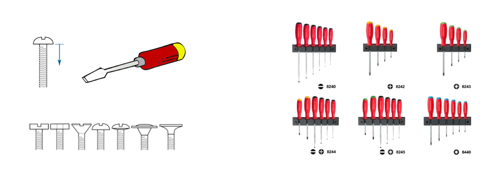

- 000 开篇词 洞悉技术的本质，享受科技的乐趣.md.html
- 001 程序员如何用技术变现（上）.md.html
- 002 程序员如何用技术变现（下）.md.html
- 003 Equifax信息泄露始末.md.html
- 004 从Equifax信息泄露看数据安全.md.html
- 005 何为技术领导力.md.html
- 006 如何拥有技术领导力.md.html
- 007 推荐阅读：每个程序员都该知道的事.md.html
- 008 Go语言，Docker和新技术.md.html
- 009 答疑解惑：渴望、热情和选择.md.html
- 010 如何成为一个大家愿意追随的Leader？.md.html
- 011 程序中的错误处理：错误返回码和异常捕捉.md.html
- 012 程序中的错误处理：异步编程和最佳实践.md.html
- 013 魔数 0x5f3759df.md.html
- 014 推荐阅读：机器学习101.md.html
- 015 时间管理：同扭曲时间的事儿抗争.md.html
- 016 时间管理：投资赚取时间.md.html
- 017 故障处理最佳实践：应对故障.md.html
- 018 故障处理最佳实践：故障改进.md.html
- 019 答疑解惑：我们应该能够识别的表象和本质.md.html
- 020 分布式系统架构的冰与火.md.html
- 021 从亚马逊的实践，谈分布式系统的难点.md.html
- 022 分布式系统的技术栈.md.html
- 023 分布式系统关键技术：全栈监控.md.html
- 024 分布式系统关键技术：服务调度.md.html
- 025 分布式系统关键技术：流量与数据调度.md.html
- 026 洞悉PaaS平台的本质.md.html
- 027 推荐阅读：分布式系统架构经典资料.md.html
- 028 编程范式游记（1）- 起源.md.html
- 029 编程范式游记（2）- 泛型编程.md.html
- 030 编程范式游记（3） - 类型系统和泛型的本质.md.html
- 031 Git协同工作流，你该怎样选.md.html
- 032 推荐阅读：分布式数据调度相关论文.md.html
- 033 编程范式游记（4）- 函数式编程.md.html
- 034 编程范式游记（5）- 修饰器模式.md.html
- 035 编程范式游记（6）- 面向对象编程.md.html
- 036 编程范式游记（7）- 基于原型的编程范式.md.html
- 037 编程范式游记（8）- Go 语言的委托模式.md.html
- 038 编程范式游记（9）- 编程的本质.md.html
- 039 编程范式游记（10）- 逻辑编程范式.md.html
- 040 编程范式游记（11）- 程序世界里的编程范式.md.html
- 041 弹力设计篇之“认识故障和弹力设计”.md.html
- 042 弹力设计篇之“隔离设计”.md.html
- 043 弹力设计篇之“异步通讯设计”.md.html
- 044 弹力设计篇之“幂等性设计”.md.html
- 045 弹力设计篇之“服务的状态”.md.html
- 046 弹力设计篇之“补偿事务”.md.html
- 047 弹力设计篇之“重试设计”.md.html
- 048 弹力设计篇之“熔断设计”.md.html
- 049 弹力设计篇之“限流设计”.md.html
- 050 弹力设计篇之“降级设计”.md.html
- 051 弹力设计篇之“弹力设计总结”.md.html
- 052 区块链技术 - 区块链的革命性及技术概要.md.html
- 053 区块链技术 - 区块链技术细节 - 哈希算法.md.html
- 054 区块链技术 - 区块链技术细节 - 加密和挖矿.md.html
- 055 区块链技术 - 去中心化的共识机制.md.html
- 056 区块链技术 - 智能合约.md.html
- 057 区块链技术 - 传统金融和虚拟货币.md.html
- 058 管理设计篇之分布式锁.md.html
- 059 管理设计篇之配置中心.md.html
- 060 管理设计篇之边车模式.md.html
- 061 管理设计篇之服务网格.md.html
- 062 管理设计篇之网关模式.md.html
- 063 管理设计篇之部署升级策略.md.html
- 064 性能设计篇之缓存.md.html
- 065 性能设计篇之异步处理.md.html
- 066 性能设计篇之数据库扩展.md.html
- 067 性能设计篇之秒杀.md.html
- 068 性能设计篇之边缘计算.md.html
- 069 程序员练级攻略（2018）：开篇词.md.html
- 070 程序员练级攻略（2018）：零基础启蒙.md.html
- 071 程序员练级攻略（2018）：正式入门.md.html
- 072 程序员练级攻略（2018）：程序员修养.md.html
- 073 程序员练级攻略（2018）：编程语言.md.html
- 074 程序员练级攻略：理论学科.md.html
- 075 程序员练级攻略（2018）：系统知识.md.html
- 076 程序员练级攻略（2018）：软件设计.md.html
- 077 程序员练级攻略（2018）：Linux系统、内存和网络.md.html
- 078 程序员练级攻略（2018）：异步IO模型和Lock-Free编程.md.html
- 079 程序员练级攻略（2018）：Java底层知识.md.html
- 080 程序员练级攻略（2018）：数据库.md.html
- 081 程序员练级攻略（2018）：分布式架构入门.md.html
- 082 程序员练级攻略（2018）：分布式架构经典图书和论文.md.html
- 083 程序员练级攻略（2018）：分布式架构工程设计.md.html
- 084 程序员练级攻略（2018）：微服务.md.html
- 085 程序员练级攻略（2018）：容器化和自动化运维.md.html
- 086 程序员练级攻略（2018）：机器学习和人工智能.md.html
- 087 程序员练级攻略（2018）：前端基础和底层原理.md.html
- 088 程序员练级攻略（2018）：前端性能优化和框架.md.html
- 089 程序员练级攻略（2018）：UIUX设计.md.html
- 090 程序员练级攻略（2018）：技术资源集散地.md.html
- 091 程序员面试攻略：面试前的准备.md.html
- 092 程序员面试攻略：面试中的技巧.md.html
- 093 程序员面试攻略：面试风格.md.html
- 094 程序员面试攻略：实力才是王中王.md.html
- 095 高效学习：端正学习态度.md.html
- 096 高效学习：源头、原理和知识地图.md.html
- 097 高效学习：深度，归纳和坚持实践.md.html
- 098 高效学习：如何学习和阅读代码.md.html
- 099 高效学习：面对枯燥和量大的知识.md.html
- 100 高效沟通：Talk和Code同等重要.md.html
- 101 高效沟通：沟通阻碍和应对方法.md.html
- 102 高效沟通：沟通方式及技巧.md.html
- 103 高效沟通：沟通技术.md.html
- 104 高效沟通：好老板要善于提问.md.html
- 105 高效沟通：好好说话的艺术.md.html
- 106 加餐 谈谈我的“三观”.md.html
- 107 结束语 业精于勤，行成于思.md.html
028 编程范式游记（1）- 起源
序
现在很多的文章和演讲都在谈架构，很少有人再会谈及编程范式。然而， 这些基础性和本质性的话题，却是非常非常重要的。
一方面，我发现在一些语言争论上，有很多人对编程语言的认识其实并不深；另一方面，通过编程语言的范式，我们不但可以知道整个编程语言的发展史，而且还能提高自己的编程技能写出更好的代码。
我希望通过一系列的文章带大家漫游一下各式各样的编程范式。（这一系列文章中代码量很大，很难用音频体现出来，所以没有录制音频，还望谅解。）
这一经历可能有些漫长，途中也会有各式各样的各种语言的代码。但是我保证这一历程对于一个程序员来说是非常有价值的，因为你不但可以对主流编程语言的一些特性有所了解，而且当我们到达终点的时候，你还能了解到编程的本质是什么。
这一系列文章中有各种语言的代码，其中有 C、C++、Python、Java、Scheme、Go、JavaScript、Prolog 等。所以，如果要能跟上本文的前因后果，你要对这几门比较主流的语言多少有些了解。而且，你需要在一线编写一段时间（大概 5 年以上吧）的代码，可能才能体会到这一系列文章的内涵。
我根据每篇文章中所讲述的内容，将这一系列文章分为四个部分。
- 第一部分：泛型编程，第 1~3 章，讨论了从 C 到 C++ 的泛型编程方法，并系统地总结了编程语言中的类型系统和泛型编程的本质。
- 第二部分：函数式编程，第 4 章和第 5 章，讲述了函数式编程用到的技术，及其思维方式，并通过 Python 和 Go 修饰器的例子，展示了函数式编程下的代码扩展能力，以及函数的相互和随意拼装带来的好处。
- 第三部分：面向对象编程，第 6~8 章，讲述与传统的编程思想相反，面向对象设计中的每一个对象都应该能够接受数据、处理数据并将数据传达给其它对象，列举了面向对象编程的优缺点，基于原型的编程范式，以及 Go 语言的委托模式。
- 第四部分：编程本质和逻辑编程，第 9~11 章，先探讨了编程的本质：逻辑部分才是真正有意义的，控制部分只能影响逻辑部分的效率，然后结合 Prolog 语言介绍了逻辑编程范式，最后对程序世界里的编程范式进行了总结，对比了它们之间的不同。
我会以每部分为一个发布单元，将这些文章陆续发表在专栏中。如果在编程范式方面，你有其他感兴趣的主题，欢迎留言给我。
下面我们来说说什么是编程范式。编程范式的英语是 programming paradigm，范即模范之意，范式即模式、方法，是一类典型的编程风格，是指从事软件工程的一类典型的风格（可以对照“方法学”一词）。
编程语言发展到今天，出现了好多不同的代码编写方式，但不同的方式解决的都是同一个问题，那就是如何写出更为通用、更具可重用性的代码或模块。
如果你准备好了，就和我一起来吧。
先从 C 语言开始
为了讲清楚这个问题，我需要从 C 语言开始讲起。因为 C 语言历史悠久，而几乎现在看到的所有编程语言都是以 C 语言为基础来拓展的，不管是 C++、Java、C#、Go、Python、PHP、Perl、JavaScript、Lua，还是 Shell。
自 C 语言问世 40 多年以来，其影响了太多太多的编程语言，到现在还一直被广泛使用，不得不佩服它的生命力。但是，我们也要清楚地知道，大多数 C Like 编程语言其实都是在改善 C 语言带来的问题。
那 C 语言有哪些特性呢？我简单来总结下：
- C 语言是一个静态弱类型语言，在使用变量时需要声明变量类型，但是类型间可以有隐式转换；
- 不同的变量类型可以用结构体（struct）组合在一起，以此来声明新的数据类型；
- C 语言可以用
typedef关键字来定义类型的别名，以此来达到变量类型的抽象； - C 语言是一个有结构化程序设计、具有变量作用域以及递归功能的过程式语言；
- C 语言传递参数一般是以值传递，也可以传递指针；
- 通过指针，C 语言可以容易地对内存进行低级控制，然而这引入了非常大的编程复杂度；
- 编译预处理让 C 语言的编译更具有弹性，比如跨平台。
C 语言的这些特性，可以让程序员在微观层面写出非常精细和精确的编程操作，让程序员可以在底层和系统细节上非常自由、灵活和精准地控制代码。
然而，在代码组织和功能编程上，C 语言的上述特性，却不那么美妙了。
从 C 语言的一个简单例子说起
我们从 C 语言最简单的交换两个变量的 swap 函数说起，参看下面的代码。
void swap(int* x, int* y)
{
int temp = *x;
*x = *y;
*y = tmp;
}
你可以想一想，这里为什么要传指针？这里是 C 语言指针，因为如果你不用指针的话，那么参数变成传值，即函数的形参是调用实参的一个拷贝，函数里面对形参的修改无法影响实参的结果。为了要达到调用完函数后，实参内容的交换，必须要把实参的地址传递进来，也就是传指针。这样在函数里面做交换，实际变量的值也被交换了。
然而，这个函数最大的问题就是它只能给 int 值用，这个世界上还有很多类型包括 double、float，这就是静态语言最糟糕的一个问题。
数据类型与现实世界的类比
与现实世界类比一下，数据类型就好像螺帽一样，有多种接口方式：平口的、有十字的、有六角的等，而螺丝刀就像是函数，或是用来操作这些螺丝的算法或代码。我们发现，这些不同类型的螺帽（数据类型），需要我们为之适配一堆不同的螺丝刀。
而且它们还有不同的尺寸（尺寸就代表它是单字节的，还是多字节的，比如整型的 int、long，浮点数的 float 和 double），这样复杂度一下就提高了，最终导致电工（程序员）工作的时候需要带下图这样的一堆工具。

这就是类型为编程带来的问题。要解决这个问题，我们还是来看一下现实世界。
你应该见过下面图片中的这种经过优化的螺丝刀，上面手柄是一样的，拧螺丝的动作也是一样的，只是接口不一样。每次我看到这张图片的时候就在想，这密密麻麻的看着有 40 多种接口，不知道为什么人类世界要干出这么多的花样？你们这群人类究竟是要干什么啊。
我们可以看到，无论是传统世界，还是编程世界，我们都在干一件事情，什么事呢？那就是通过使用一种更为通用的方式，用另外的话说就是抽象和隔离，让复杂的“世界”变得简单一些。
然而，要做到抽象，对于 C 语言这样的类型语言来说，首当其冲的就是抽象类型，这就是所谓的——泛型编程。
另外，我们还要注意到，在编程世界里，对于 C 语言来说，类型还可以转换。编译器会使用一切方式来做类型转换，因为类型转换有时候可以让我们编程更方便一些，也让相近的类型可以做到一点点的泛型。
然而，对于 C 语言的类型转换，是会出很多问题的。比如说，传给我一个数组，这个数组本来是 double 的，或者是 long 64 位的，但是如果把数组类型强转成 int，那么就会出现很多问题，因为这会导致程序遍历数组的步长不一样了。
比如：一个 double a[10] 的数组，a[2] 意味着 a + sizeof(double) * 2。如果你把 a 强转成 int，那么 a[2] 就意味着 a + sizeof(int) * 2。我们知道 sizeof(double) 是 8，而 sizeof(int) 是 4。于是访问到了不同的地址和内存空间，这就导致程序出现严重的问题。
C 语言的泛型
一个泛型的示例 - swap 函数
好了，我们再看下，C 语言是如何泛型的。C 语言的类型泛型基本上来说就是使用void *关键字或是使用宏定义。
下面是一个使用了void*泛型版本的 swap 函数。
void swap(void* x, void* y, size_t size)
{
char tmp[size];
memcpy(tmp, y, size);
memcpy(y, x, size);
memcpy(x, tmp, size);
}
上面这个函数几乎完全改变了 int 版的函数的实现方式，这个实现方式有三个重点：
- 函数接口中增加了一个size参数。为什么要这么干呢？因为，用了
void*后，类型被“抽象”掉了，编译器不能通过类型得到类型的尺寸了，所以，需要我们手动地加上一个类型长度的标识。 - 函数的实现中使用了memcpy()函数。为什么要这样干呢？还是因为类型被“抽象”掉了，所以不能用赋值表达式了，很有可能传进来的参数类型还是一个结构体，因此，为了要交换这些复杂类型的值，我们只能使用内存复制的方法了。
- 函数的实现中使用了一个temp[size]数组。这就是交换数据时需要用的 buffer，用 buffer 来做临时的空间存储。
于是，新增的size参数，使用的memcpy内存拷贝以及一个 buffer，这增加了编程的复杂度。这就是 C 语言的类型抽象所带来的复杂度的提升。
在提升复杂度的同时，我们发现还有问题，比如，我们想交换两个字符串数组，类型是：char*，那么，我的swap()函数的x和y参数是不是要用void**了？这样一来，接口就没法定义了。
除了使用 void* 来做泛型，在 C 语言中，还可以用宏定义来做泛型，如下所示：
#define swap(x, y, size) {\
char temp[size]; \
memcpy(temp, &y, size); \
memcpy(&y, &x, size); \
memcpy(&x, temp, size); \
}
但用宏带来的问题就是编译器做字符串替换，因为宏是做字符串替换，所以会导致代码膨胀，导致编译出的执行文件比较大。不过对于 swap 这个简单的函数来说，用void*和宏替换来说都可以达到泛型。
但是，如果我们不是 swap，而是 min() 或 max() 函数，那么宏替换的问题就会暴露得更多一些。比如，对于下面的这个宏：
#define min(x, y) （(x)>(y) ? (y) : (x)）
其中一个最大的问题，就是有可能会有重复执行的问题。如：
min(i++, j++)对于这个案例来说，我们本意是比较完后，对变量做累加，但是，因为宏替换的缘故，这会导致变量i或j被累加两次。min(foo(), bar())对于这个示例来说，我们本意是比较foo()和bar()函数的返回值，然而，经过宏替换后，foo()或bar()会被调用两次，这会带来很多问题。
另外，你会不会觉得无论是用哪种方式，这种“泛型”是不是太宽松了一些，完全不做类型检查，就是在内存上对拷，直接操作内存的这种方式，感觉是不是比较危险，而且就像一个定时炸弹一样，不知道什么时候，在什么条件下就爆炸了。
从上面的两个例子，我们可以发现，无论哪种方式，接口都变得复杂了——加入了size，因为如果不加入size的话，那么我们的函数内部就需要自己检查size。然而，void* 这种地址的方式是没法得到size的。
而宏定义的那种方式，虽然不会把类型给隐藏掉，可以使用像 sizeof(x) 这样的方式得到 size。但是如果类型是 char*，那么，使用sizeof方式只能提到指针类型的size，而不是值的size。另外，对于不同的类型，比如说double和int，那应该用谁的size呢？是不是先转一下型呢？这些都是问题。
于是，这种泛型，让我们根本没有办法检查传入参数的size，导致我们只能增加接口复杂度，加入一个size参数，然后把这个问题抛给调用者了。
一个更为复杂的泛型示例 - Search 函数
如果我们把这个事情变得更复杂，写个search函数，再传一个int数组，然后想搜索target，搜到返回数组下标，搜不到返回-1。
int search(int* a, size_t size, int target) {
for(int i=0; i<size; i++) {
if (a[i] == target) {
return i;
}
}
return -1;
}
我们可以看到，这个函数是类型 int 版的。如果我们要把这个函数变成泛型的应该怎么变呢？
就像上面swap()函数那样，如果要把它变成泛型，我们需要变更并复杂化函数接口。
- 我们需要在函数接口上增加一个 element size，也就是数组里面每个元素的 size。这样，当我们遍历数组的时候，可以通过这个 size 正确地移动指针到下一个数组元素。
- 我还要加个
cmpFn。因为我要去比较数组里的每个元素和target是否相等。因为不同数据类型的比较的实现不一样，比如，整型比较用==就好了。但是如果是一个字符串数组，那么比较就需要用strcmp这类的函数。而如果你传一个结构体数组（如：Account 账号），那么比较两个数据对象是否一样就比较复杂了。所以，必须要自定义一个比较函数。
最终我们的search函数的泛型版如下所示：
int search(void* a, size_t size, void* target,
size_t elem_size, int(*cmpFn)(void*, void*) )
{
for(int i=0; i<size; i++) {
// why not use memcmp()
// use unsigned char * to calculate the address
if ( cmpFn ((unsigned char *)a + elem_size * i, target) == 0 ) {
return i;
}
}
return -1;
}
在上面的代码中，我们没有使用memcmp()函数，这是因为，如果这个数组是一个指针数组，或是这个数组是一个结构体数组，而结构体数组中有指针成员。我们想比较的是指针指向的内容，而不是指针这个变量。所以，用memcmp()会导致我们在比较指针（内存地址），而不是指针所指向的值。
而调用者需要提供如下的比较函数：
int int_cmp(int* x, int* y)
{
return *x - *y;
}
int string_cmp(char* x, char* y){
return strcmp(x, y);
}
如果面对有业务类型的结构体，可能会是这样的比较函数：
typedef struct _account {
char name[10];
char id[20];
} Account;
int account_cmp(Account* x, Account* y) {
int n = strcmp(x->name, y->name);
if (n != 0) return n;
return strcmp(x->id, y->id);
}
我们的 C 语言干成这个样子，看上去还行，但是，上面的这个search函数只能用于数组这样的顺序型的数据容器（数据结构）。如果这个search函数要能支持一些非顺序型的数据容器（数据结构），比如：堆、栈、哈希表、树、图。那么，用 C 语言来干基本上干不下去了，对于像search()这样的算法来说，数据类型的自适应问题就已经把事情搞得很复杂了。然而，数据结构的自适应就会把这个事的复杂度搞上几个数量级。
小结
这里，如果说，程序 = 算法 + 数据，我觉得 C 语言会有这几个问题。
- 一个通用的算法，需要对所处理的数据的数据类型进行适配。但在适配数据类型的过程中，C 语言只能使用
void*或宏替换的方式，这两种方式导致了类型过于宽松，并带来很多其它问题。 - 适配数据类型，需要 C 语言在泛型中加入一个类型的 size，这是因为我们识别不了被泛型后的数据类型，而 C 语言没有运行时的类型识别，所以，只能将这个工作抛给调用泛型算法的程序员来做了。
- 算法其实是在操作数据结构，而数据则是放到数据结构中的。所以，真正的泛型除了适配数据类型外，还要适配数据结构。最后这个事情导致泛型算法的复杂急剧上升。比如容器内存的分配和释放，不同的数据体可能有非常不一样的内存分配和释放模型，再比如对象之间的复制，要把它存进来我需要有一个复制，这其中又涉及到是深拷贝，还是浅拷贝。
- 最后，在实现泛型算法的时候，你会发现自己在纠结哪些东西应该抛给调用者处理，哪些又是可以封装起来。如何平衡和选择，并没有定论，也不好解决。
总体来说，C 语言设计目标是提供一种能以简易的方式编译、处理低层内存、产生少量的机器码以及不需要任何运行环境支持便能运行的编程语言。C 语言也很适合搭配汇编语言来使用。C 语言把非常底层的控制权交给了程序员，它设计的理念是：
- 相信程序员；
- 不会阻止程序员做任何底层的事；
- 保持语言的最小和最简的特性；
- 保证 C 语言的最快的运行速度，那怕牺牲移值性。
从某种角度上来说，C 语言的伟大之处在于——使用 C 语言的程序员在高级语言的特性之上还能简单地做任何底层上的微观控制。这是 C 语言的强大和优雅之处。也有人说，C 语言是高级语言中的汇编语言。
不过，这只是在针对底层指令控制和过程式的编程方式。而对于更高阶更为抽象的编程模型来说，C 语言这种基于过程和底层的初衷设计方式就会成为它的短板。因为，在编程这个世界中，更多的编程工作是解决业务上的问题，而不是计算机的问题，所以，我们需要更为贴近业务更为抽象的语言。
说到这里，我想你会问，那 C 语言本会怎么去解决这些问题呢？简单点说，C 语言并没有解决这些问题，所以才有了后面的 C++ 等其他语言，下一篇文章中，我也会和你聊聊 C++ 是如何解决这些问题的。
C 语言诞生于 1972 年，到现在已经有 45 年的历史，在它之后，C++、Java、C# 等语言前仆后继，一浪高过一浪，都在试图解决那个时代的那个特定问题，我们不能去否定某个语言，但可以确定的是，随着历史的发展，每一门语言都还在默默迭代，不断优化和更新。同时，也会有很多新的编程语言带着新的闪光耀眼的特性出现在我们面前。
再回过头来说，编程范式其实就是程序的指导思想，它也代表了这门语言的设计方向，我们并不能说哪种范式更为超前，只能说各有千秋。
比如 C 语言就是过程式的编程语言，像 C 语言这样的过程式编程语言优点是底层灵活而且高效，特别适合开发运行较快且对系统资源利用率要求较高的程序，但我上面抛出的问题它在后来也没有试图去解决，因为编程范式的选择基本已经决定了它的“命运”。